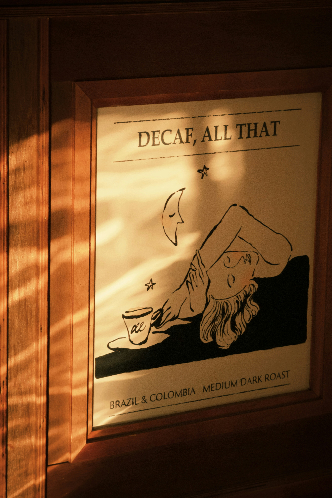
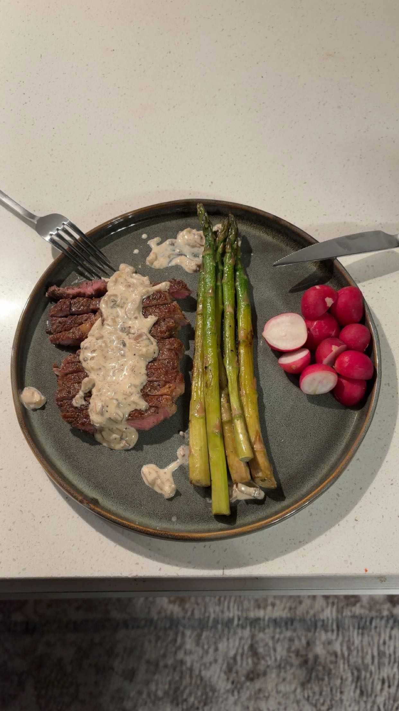
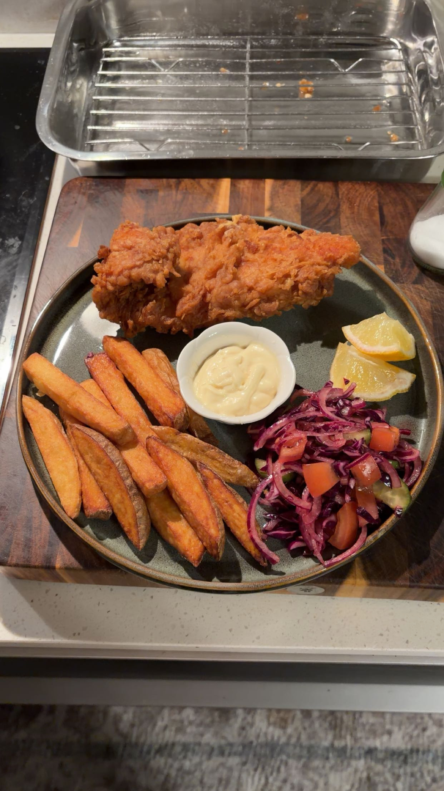
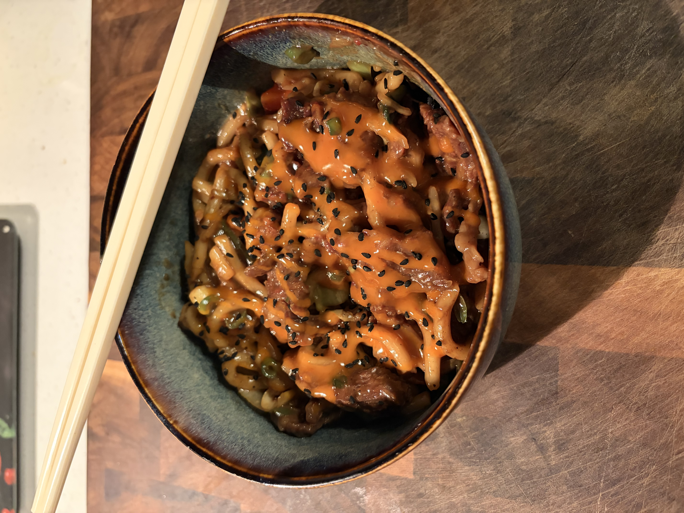

Koken
Ik hou enorm van koken
check mijn recepten section voor meer
Sporten
Ik heb 14 jaar gevoetbald
ik heb ook stage mogen lopen bij Az en Ajax
Muziek
Ik speel al een paar jaar de piano en gitaar
check mijn muziek section voor meer
id="Intro"
Dit is mijn profile wrapped hier kan je,
informatie vinden over mij als persoon.
Check hier onder mijn Skills
id="persoonlijk"
Ik hou enorm van koken
check mijn recepten section voor meer
Ik heb 14 jaar gevoetbald
ik heb ook stage mogen lopen bij Az en Ajax
Ik speel al een paar jaar de piano en gitaar
check mijn muziek section voor meer
id="skills"
html / css
js / ts
vue / nuxt
Hier boven zie je de skills waar ik veel mee werk
maar op mijn github kan je meer lezen over wat ik doe en kan.

id="recepten"

Recept bevat:

Recept bevat:

Recept bevat:
id="muziek"

id="projecten"
Op mijn github kan je mijn projecten bekijken.